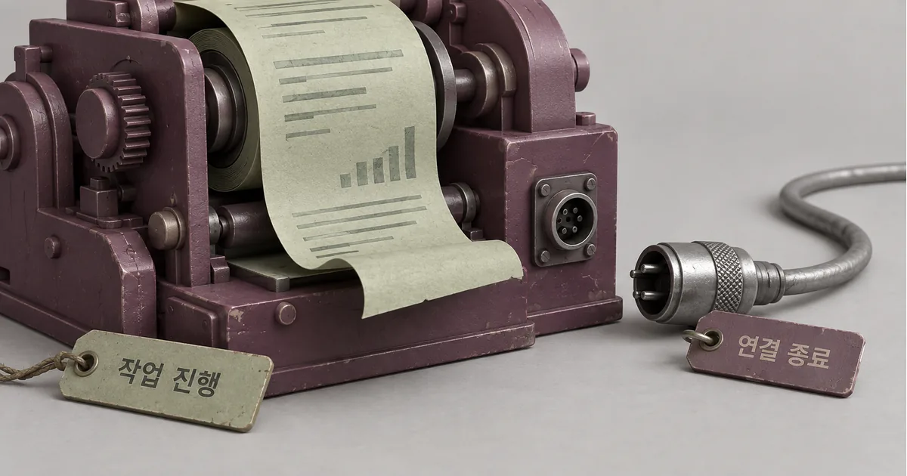
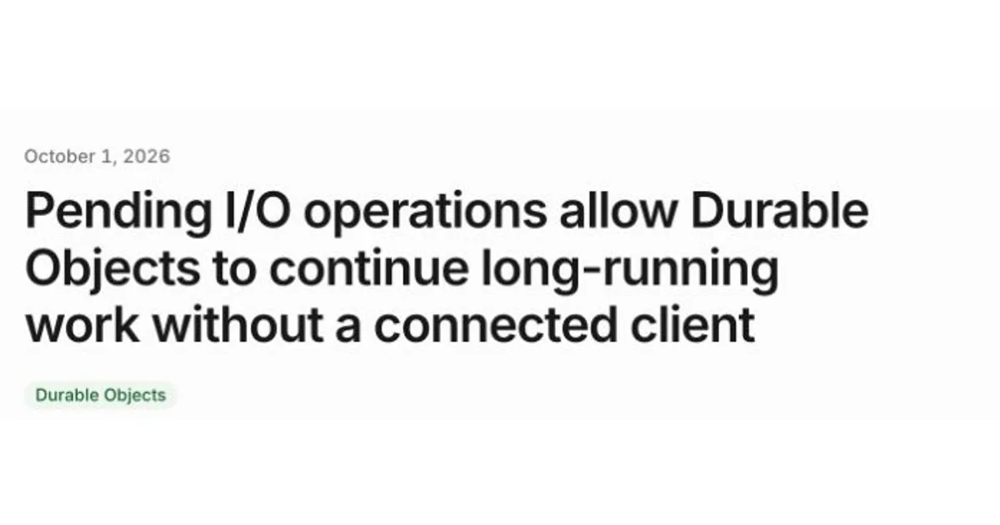
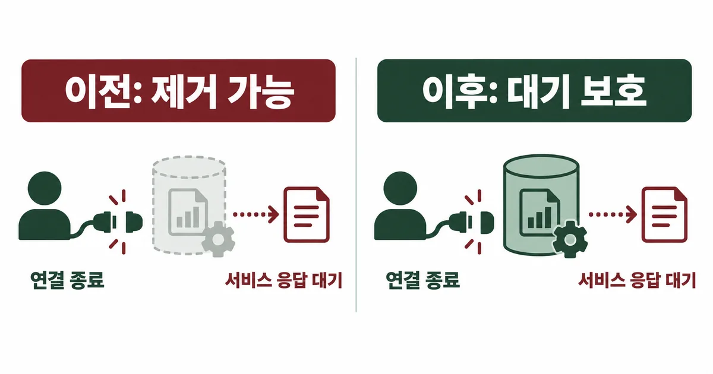
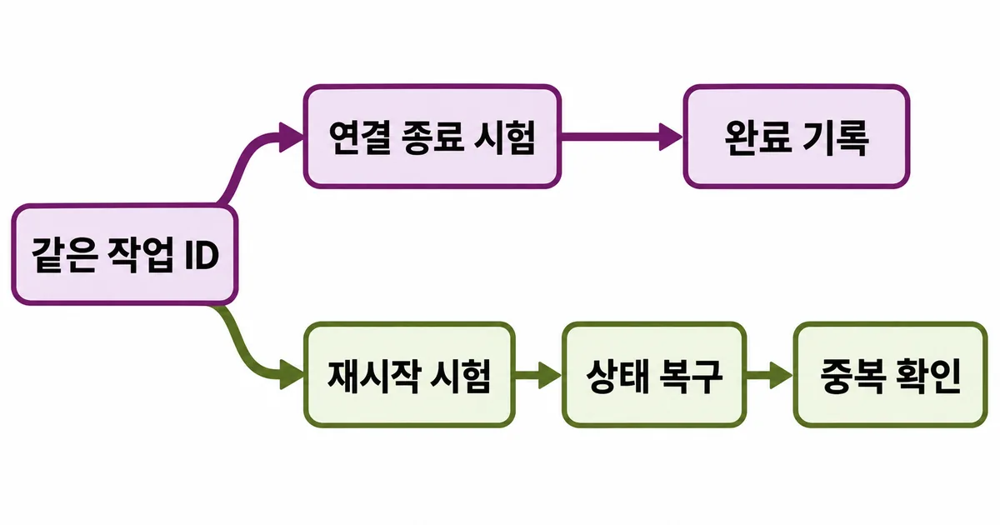

보고서 생성을 눌러 두고 창을 닫았는데 완료 기록이 남지 않는다. Durable Objects에서는 10월 1일 변경으로 일부 대기 작업이 사용자의 연결 종료 뒤에도 객체를 유지한다. 다만 오래 살아 있는 것과 중단 후 다시 이어 가는 것은 다른 조건이다. 내 작업이 새 보호 대상인지, 재시작하면 어디서 이어지는지를 나눠 확인해야 한다.

IT 트렌드 해설
30초 요약
- 연결 종료 뒤 새 보호 대상 작업은 유휴 제거를 늦추지만, 재시작 복구와 중복 처리는 저장 상태와 외부 API 계약으로 따로 확인해야 한다.
- 호환성 날짜와 플래그를 확인한 뒤 연결 종료·재시작을 따로 시험한다.
- 유휴 제거 보호는 영구 실행이나 정확히 한 번 처리를 보장하지 않으며 대기 시간도 사용량에 남는다.
먼저 알아둘 말
- 유휴 제거
- 요청이 없는 서버 객체를 런타임이 메모리에서 내리는 동작이다.
- 호환성 날짜
- Worker가 따를 런타임 동작의 기준 날짜다. 실제 배포 설정에서 선택한다.
- 멱등성
- 같은 요청을 다시 보내도 추가 결과가 생기지 않도록 하는 성질이다.
핵심 해설 · Cloudflare Changelog · 2026. 10. 1
Durable Objects, 연결 종료 뒤 대기 작업의 유휴 제거 보호 확대
Cloudflare는 일부 대기 작업이 연결된 클라이언트 없이도 Durable Objects의 유휴 제거를 늦추도록 변경했다. 호환성 날짜와 작업별 상한, 저장 상태와 중복 처리의 별도 책임을 함께 확인한다.
응답 뒤에 남는 작업부터 찾아본다
Durable Objects는 상태를 가진 서버 객체다. 같은 작업을 한곳에서 조정할 때 쓰지만, 이름에 Durable이 있다고 실행 중인 함수와 메모리까지 영구 보존되는 것은 아니다. 완료 기록을 저장하는 일과 실행 인스턴스가 살아 있는 일은 구분해야 한다.
10월 1일 변경은 사용자의 연결이 끝난 뒤에도 남아 있는 일부 비동기 작업을 보호한다. 서비스 바인딩은 Worker끼리 호출하는 연결이고, RPC는 다른 객체의 메서드를 원격으로 부르는 방식이다. 이런 응답을 기다리는 동안 유휴 상태라는 이유로 객체가 사라지는 상황을 줄인다.
- Durable Objects를 쓰는 작업에서 배포된 compatibility_date와 두 유지 플래그를 확인한다.
- 응답을 반환한 뒤 남는 작업이 서비스 바인딩·RPC·타이머·waitUntil 중 무엇인지 구분한다.
- 작업 식별자와 진행 상태를 영구 저장하고, 재시작 때 읽어 이어 갈 경로가 있는지 확인한다.
- 검증 환경에서 연결 종료와 재시작을 따로 시험하고, 중복 결과와 duration 사용량을 함께 비교한다.
Durable Objects를 쓰지 않는 일반 Worker나 이미 끝난 작업에는 이 변경을 그대로 적용할 수 없다. 외부 서비스로 나가는 fetch, TCP 소켓과 외부 WebSocket은 이전부터 객체 유지에 관여했다. 모든 네트워크 호출이 이번에 처음 보호된 것은 아니다.

오래된 날짜는 자동으로 새 동작을 받지 않는다
Workers는 호환성 날짜로 런타임의 일부 동작을 선택한다. 이번 기본값의 경계는 compatibility_date가 2026-10-01 이상인지다. 달력에서 10월이 됐다는 사실만으로 오래된 배포 설정이 바뀌지는 않는다.
| 배포 설정 | 이번 보호 | 확인할 선택 |
|---|---|---|
| 2026-10-01 이상 | 기본 적용 | 명시적 제외 플래그 확인 |
| 이전 날짜 | 자동 적용 아님 | 유지 플래그로 선택 적용 |
| 제외 플래그 지정 | 이번 동작에서 제외 | 기존 동작을 의도했는지 확인 |
이전 날짜를 유지하면서 선택 적용 시는 durable_object_io_tasks_prevent_eviction을 쓴다. 제외할 때는 durable_object_io_tasks_do_not_prevent_eviction이다. 아래는 두 플래그를 함께 쓰지 않는 설정 예시이며, 독자의 프로젝트에서 배포해 확인한 결과는 아니다.
// 기존 날짜를 유지하는 선택 적용 예시
{
"compatibility_date": "2026-09-01",
"compatibility_flags": [
"durable_object_io_tasks_prevent_eviction"
]
}
적용 여부는 달력 날짜가 아니라 배포 설정으로 판별한다. 날짜와 플래그를 고정해 두면 아래 실행 조건을 같은 기준에서 비교할 수 있다.
15분은 작업별 보호 창이다
공식 생명주기 문서에서 상한은 작업이 시작된 때부터 최대 15분이다. 작업이 먼저 끝나면 그때 보호도 끝난다. 동시에 시작한 두 작업이 각각 15분이라고 30분의 한 창으로 합쳐지는 것은 아니다.
예를 들어 A가 0분에 시작하고 B가 10분에 시작했다고 가정하자. A의 보호 상한은 15분, B는 25분이다. B가 실제로 대기 중이면 더 뒤까지 유지 조건이 남을 수 있다. 이것은 문서 규칙을 읽기 위한 가상 시간표이며 25분 실행을 측정한 결과가 아니다.
- A와 B가 동시에 시작하면 두 보호 상한은 합쳐지지 않는다.
- B가 나중에 시작했어도 먼저 끝나면 그 시점에 B의 유지 조건은 끝난다.
- 15분은 작업별 유휴 제거 보호 상한이며 작업 완료 시간 보장이 아니다.
타이머와 this.ctx.waitUntil()에 전달한 Promise도 새 보호 대상이다. 그러나 아무 Promise나 변수에 보관한 것만으로 영구 작업 큐가 생기지는 않는다. State API 문서는 waitUntil이 요청이나 RPC의 완료 시점을 바꾸지는 않는다고 설명한다.
끊긴 화면과 재시작한 서버를 따로 시험한다
연결 종료 시험은 살아 있는 인스턴스의 작업 지속을 보고, 재시작 시험은 저장된 진행 상태로 복구되는지를 본다. 둘을 따로 통과해야 화면을 닫아도 업무가 끝난다는 약속을 평가할 수 있다.
| 시험 장면 | 남길 기록 | 통과로 볼 조건 |
|---|---|---|
| 클라이언트 연결 종료 | 작업 ID·시작·완료 시각 | 응답 뒤 시작한 대상 작업의 완료 기록 |
| 객체 재시작 후 재요청 | 저장된 단계·외부 처리 ID | 진행 상태 복구와 중복 결과 없음 |
| 외부 응답 지연 | 대기 시간·오류·duration | 제한된 종료 또는 복구 경로가 기록됨 |

생명주기 문서는 코드 배포와 런타임 변경 등으로 객체가 종료될 수 있다고 설명한다. 종료 직전 저장을 보장하는 훅도 제공하지 않는다. 마지막 순간 한 번 저장하기보다 진행이 확정될 때마다 복구 가능한 상태를 남기는 설계가 필요하다.
이번 보호는 유휴 제거를 늦추는 조건이며 배포·런타임 재시작을 막거나 업무의 한 번 처리를 보장하지 않는다.
다시 깨우는 알람에도 중복 경계는 남는다
장시간 뒤 다시 실행할 일을 setTimeout에만 맡기면 메모리 생명주기에 의존한다. Durable Objects 알람은 저장소 API로 미래의 기상 시각을 예약한다. 객체당 한 알람을 둘 수 있으므로 여러 일정은 저장한 목록을 읽고 다음 시각을 다시 예약하는 방식으로 구성할 수 있다.
알람 핸들러는 적어도 한 번 실행되는 계약이며 예외를 던지면 제한된 재시도를 받는다. 적어도 한 번은 정확히 한 번과 다르다. 오래 살아 있는 객체 안에서도 외부 처리는 성공했지만 완료 상태 저장 전 실패하는 구간이 생길 수 있다.
AWS Builders’ Library는 같은 요청 식별자로 중복 요청을 판별하고 의미가 같은 응답을 돌려주는 멱등성 설계를 설명한다. 이는 Cloudflare 실행 결과를 검증하는 자료가 아니라 별도 공급자가 설명한 중복 처리 근거다.
- 가상의 보고서 작업: 작업 ID와 마지막 확정 단계, 결과 위치를 함께 기록한다.
- 외부 쓰기 전에 같은 ID의 중복 처리와 결과 조회 계약을 확인한다.
- 완료 상태가 없더라도 외부에는 결과가 있을 수 있어 먼저 조회한 뒤 재시도를 결정한다.
외부 처리와 우리 저장소 기록은 서로 다른 시스템의 작업이다. 내부 상태를 한 번 저장했다고 외부 부작용까지 원자적으로 묶이는 것은 아니다. 공급자의 중복 키 지원과 결과 조회 기간이 불명확하면 자동 재실행보다 확인 대기로 남기는 편이 안전하다.
더 오래 대기하는 시간도 사용량에 남는다
가격 문서는 객체가 실행 중이거나 메모리에 남아 휴면 조건을 충족하지 못하면 duration을 계산한다고 설명한다. duration은 CPU를 바쁘게 쓴 시간만이 아니라 벽시계 시간 기준이다. 외부 응답을 기다리는 동안에도 유지 조건 때문에 사용량이 늘 수 있다.
보호가 생겼다는 이유로 주기적인 빈 호출이나 타이머를 추가해 객체를 계속 붙잡는 방식은 피하자. 불필요한 대기는 종료하고, 미래의 재개는 저장된 작업과 알람으로 분리할지 검토한다. 유지 시간을 길게 만드는 것과 유용한 업무를 더 완료하는 것은 다른 성과다.
검증 전후에는 같은 입력 수와 같은 대기 조건에서 완료·실패·중복 작업 수, 대기 시간, duration 사용량을 나란히 남긴다. 이 글은 실제 계정의 비용 절감이나 완료율을 측정하지 않았다. 포함 사용량과 요금제에 따라 청구 효과도 달라진다.
참고한 자료
백그라운드 작업의 신뢰성은 인스턴스가 몇 분 살아 있었는지만으로 평가할 수 없다. 사용자의 연결과 서버 객체의 생명주기를 분리한 뒤, 남아 있는 작업과 저장된 진행 상태, 외부 처리 결과가 같은 식별자로 이어지는지 보자. 이번 변경은 그중 연결 종료 뒤의 유휴 제거 조건을 개선한다. 재시작과 중복 처리는 여전히 애플리케이션이 설계하고 검증해야 할 경계다. 배포 설정과 대기 작업 종류를 확인하고 연결 종료·재시작 시험에서 같은 작업 ID의 완료 기록과 중복 여부를 확인했다면 적용 검토가 끝난다.